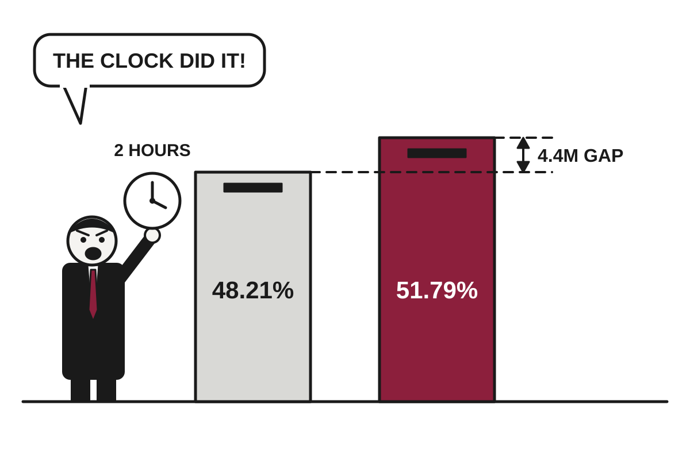

Lula Wins Fourth Term After Losing Round One; Rival Asks for Do-Over
Brazil's 80-year-old president beat Flávio Bolsonaro 51.79% to 48.21%, a 4.4 million vote gap that his opponent says should be annulled anyway.
The wire said: Lula wins historic fourth term as Brazilian president in defeat of far-right Flávio Bolsonaro · The Guardian

Catch up
Flávio Bolsonaro, son of the jailed former president Jair Bolsonaro, narrowly led the first round on 4 October. Lula, who beat Jair Bolsonaro in 2022, then won the runoff on Sunday.Why it matters
The result keeps Brazil, Latin America's largest economy, under a leftist government that is openly at odds with Donald Trump, while investors fret over fiscal policy. A contested loss also tests whether Brazil's institutions can withstand a second Bolsonaro refusal to concede.Luiz Inácio Lula da Silva won a fourth term as Brazil's president on Sunday, taking 51.79% of the vote to Flávio Bolsonaro's 48.21%, according to The Guardian and the BBC. With every vote counted, the margin was 4.4 million. Bolsonaro, a 45-year-old senator, declined to accept it, which in Brazilian politics is now less a reaction than a family tradition.
Lula's win is historic in two ways. He is the first Brazilian to secure a fourth term, which would run until 2030. He is also the first candidate since civilian rule returned in the 1980s to lose the first round and then win the runoff. The Guardian noted that no first-round runner-up had ever done this. Lula had trailed 47% to 45% on 4 October.
How did he do it? Mostly by persuading his own voters to leave the house. In round one, 33 million people did not vote, and abstention hit a record 21.08%. Translation: abstention means eligible voters who stay home, and The Guardian reported that this hurt Lula most because his voters tend to live farther from polling stations. In the runoff it fell to 19.21%, which the BBC described as the largest drop between rounds since 1989.
Bolsonaro's objection centers on Supreme Court Justice Cristiano Zanin's decision to extend voting by two hours, to 7pm. He called it 'unacceptable' and said it changed the rules mid-game. Some of his supporters note that Zanin once served as Lula's lawyer. The BBC points out a complication: both campaigns had asked for an extension. Lula's team cited a lack of buses in São Paulo and Bahia, while Bolsonaro's cited heavy rain in the south and in São Paulo. Bolsonaro's speech left out that his own side had made the same request.
Observers think the challenge will fail, the BBC reported. The electoral court's president, Kássio Nunes Marques, confirmed the result and said the extension did not change the outcome. Notably, Jair Bolsonaro appointed him. A 4.4 million vote margin is also hard to blame on two extra hours of daylight.
Markets were less enthusiastic than the crowds. The BBC reported that the São Paulo stock exchange opened 15% lower, triggering a brief suspension before a slight recovery, and that interest rate futures rose as investors studied Lula's fiscal plans. Translation: traders are betting the government will spend more and that borrowing will get costlier. Lula also faces a hostile Congress, per the BBC's related coverage.
Abroad, the congratulations came from across the spectrum, including Mexico's Claudia Sheinbaum, the European Commission's Ursula von der Leyen and Canada's Mark Carney. Trump, the Bolsonaro family's most important foreign ally, had not yet reacted, according to the BBC. Lula used his victory speech to say Brazil 'will not accept being anyone's backyard,' a reference to Trump's so-called 'Donroe Doctrine.'
Jair Bolsonaro, serving 27 years for a coup attempt, had hoped his son's victory would free him and perhaps give him a government role, The Guardian reported. That plan has been postponed, along with the one for the victory speech. Lula's new term starts 5 January, and the next thing to watch is whether the annulment request goes anywhere. Current odds suggest it will not.
Satire based on reporting by The Guardian, BBC World, NPR World. Read the originals for the straight version.